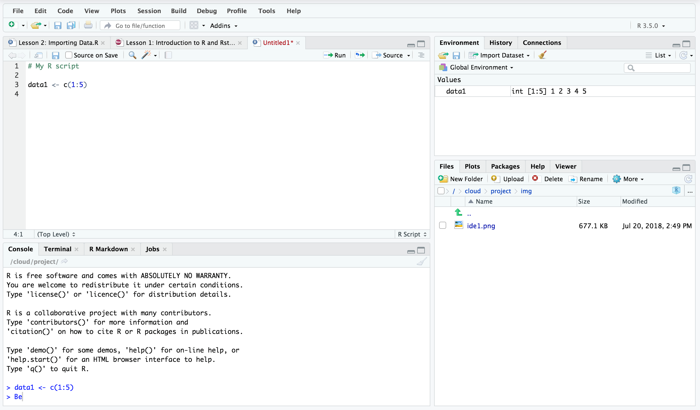
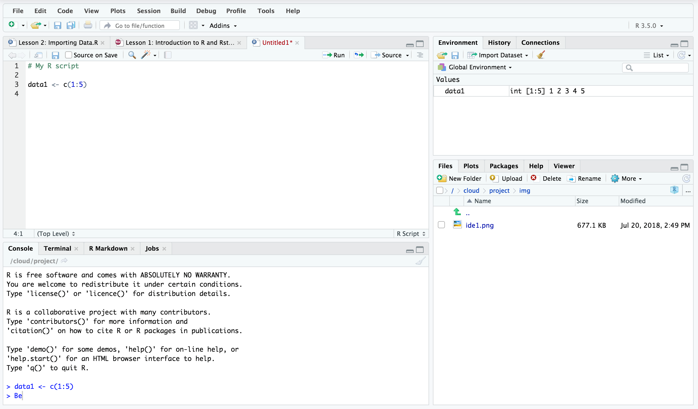

Section 2 Introduction to R and R Studio
2.1 By the end of this section, you should be able to:
- Download R and R studio
- Identify the R script, R console, Data environment and file browser in R studio
- Write and run R code from a script
- Install and load R packages
2.2 Why learn / use R?
2.2.1 Some information about R
- R is developed and used by scientists and researchers around the world
- Open source = no cost
- Constant development
- Connects to other data science/research tools
- Worldwide community: training widely available
- Encourages transparency and reproducibility
- Publication-ready outputs
2.2.2 Moving from other software to R
- Workflow is different
- Organise files and data differently
- Workspace can contain data and outputs
- Can manage multiple datasets within a workspace
- Learning curve can be steep initially
- e.g. Variables and coding, scripts
- Need to know what you want
- e.g. building your regression model / ANOVA error terms
2.3 R has many advantages
- Using scripts means analysis is easy to follow and reproduce
- R scripts are small, online collaboration, no SPSS “older version” problems
- Data can be organised and reorganised however you need it (tidyr)
- Packages are available for “cutting edge” analysis: e.g. Big Data & Machine Learning
- A robust language for precise plots and graphics (ggplot)
- R analysis code can be embdeded into documents and presentations (R Markdown)
2.5 The R Studio environment
 

The interface for R Studio looks daunting at first. However, there are 4 main sections, 2 on the left and 2 on the right.
- MAIN TOP: R Script files or R Document Files
- Where we usually type our code as a script before we run it. Script files are usually saved so we can work on them and rerun the code again later (.R files).
- MAIN BOTTOM: Console
- Shows the output of our R code. We can type R code directly into the console and the answer will ouput immediately. However, it is more convenient to use script files.
- RIGHT TOP: Environment
- Contains all of the objects (e.g. data, analysis, equations, plots) that are currently stored in memory. We can save all of this to a file and load it later (.RData files).
- RIGHT BOTTOM: File Browser
- The folder that R is working from is called ‘the working directory’ and it will automatically look for files there if we try to import something (e.g. a data file). Using the more button on the file browser allows you to set your desired working directory.
2.6 Working with a script
Scripts can be opened from the File menu.

Creating a new script
The purpose of scripts is to allow you to type your analysis code and save it for use later. Scripts include, for example:
- Code for importing data into R
- Your analysis code (e.g. t-test or descriptive statistics)
- Code for graphs and tables
- Comments and notes (preceded by the ‘#’ symbol)

Example of an R script
To run a script, you click the Run button. You can choose to:
- Run the whole script
- Run the selected line of code

The run button
When you run the script, you will normally see output in the console.

Output appears in the console
If your script contains code for a plot (graph), it will appear in the Plots window in the bottom right.

Plots appear in the plot window
2.7 Installing and loading packages
install Packages from RStudio, Inc. on Vimeo.
Packages add functionality to R and allow us to do new types of analysis.
They can be installed via the menu (Tools -> Install Packages)
The can also be installed using code:
install.packages()
For example, TidyR is a package that contains functions for sorting and organising data. To install the package:
Installing a package in RStudio
or use the code:
install.packages(“tidyr”)Once a package is has been installed, you need tp load it using the library() command. For example:
library(“tidyr”)